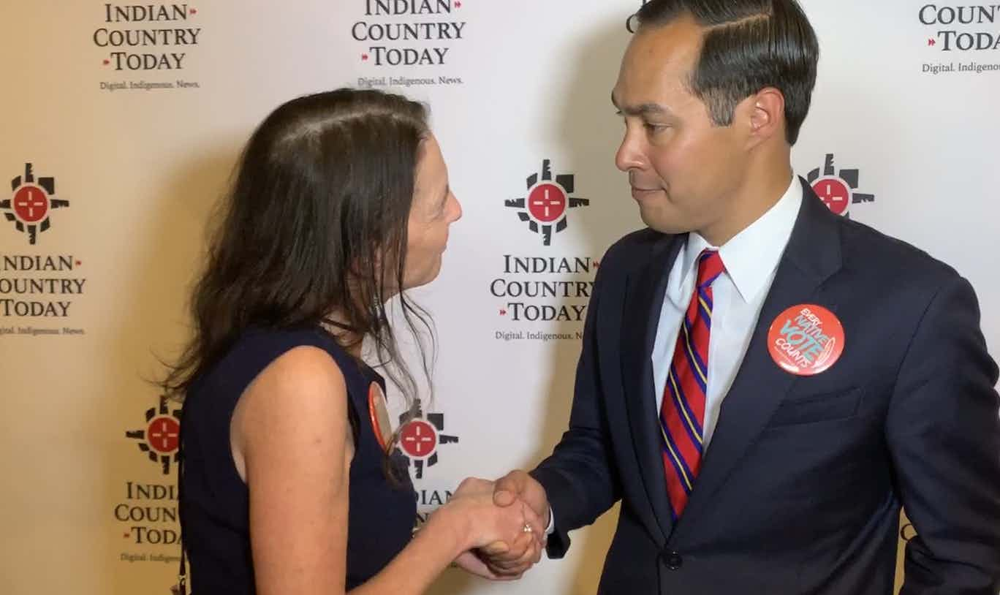
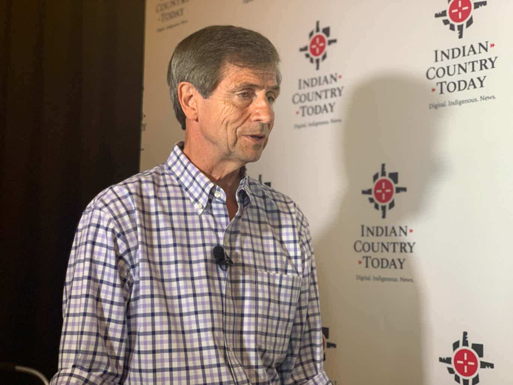
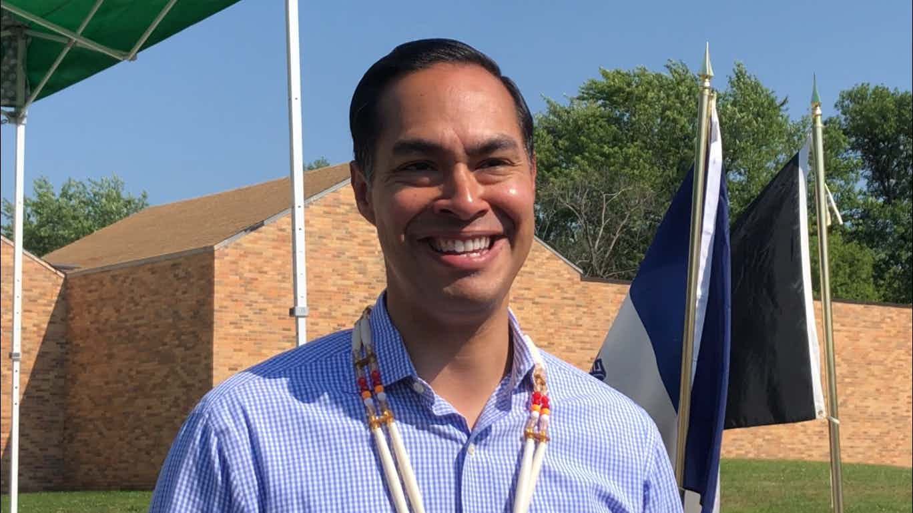
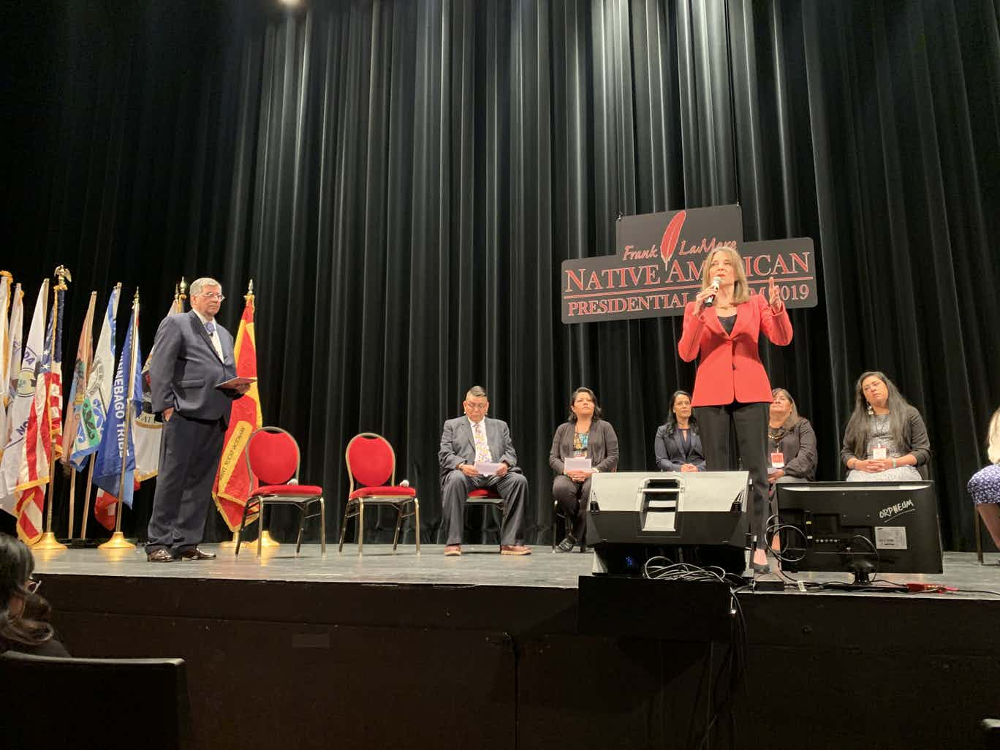

A recurring theme of the Frank LaMere Native American Presidential Forum was language. Indian Country listened as panelists spoke various languages before they asked questions to White House hopefuls.

Former congressman Joe Sestak from Pennsylvania started off the second day of the Frank LaMere Presidential Forum.

Hours before the Julián Castro takes the stage at the Frank LaMere Presidential Forum, Indian Country Today learned his campaign has four new endorsements from Native leaders.
Montana Governor Steve Bullock was the fourth and final candidate to speak on Monday at the Frank LaMere Presidential Forum in Sioux City, Iowa.

Author Marianne Williamson took the stage, escorted by a tribal elder and youth, as she was introduced by Ruth Buffalo, the first Native woman in the North Dakota State Legislature.

LaDonna Harris remembers what Washington, D.C., was like in the 1960s. Tribal leaders had to travel back and forth across town, meeting in different offices, in order to get business done with the federal government.